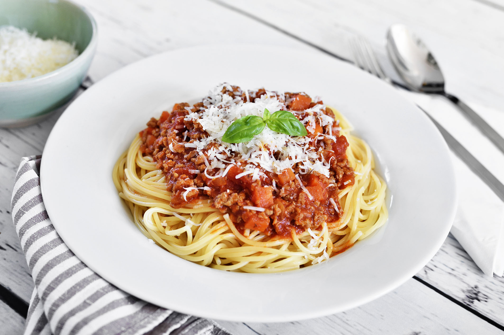

Recepten

Ingrediënten
- dikke ajuin 1
- dikke wortelen 2
- selder 4 stengels
- 3 teentjes look
- gemengd gehakt 1 kg
Bereiding
- Zet een ruime kookpot op een matig vuur. Giet er een scheutje olijfolie in.
- Bak het gehakt in de hete olijfolie. Roer regelmatig om.
- Pel de uien en snipper ze fijn. Plet de look tot pulp.
- Voeg ten slotte de tomatenpulp (of passata) toe en laat de saus nog 10 minuten sudderen op een zacht vuurtje. Proef en kruid de saus met wat zout en peper van de molen.